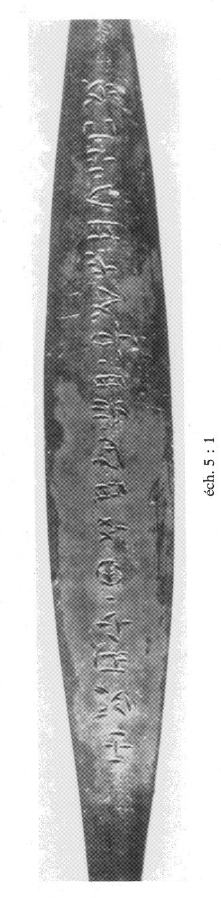
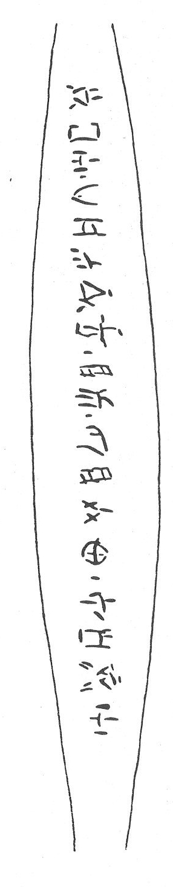

-
CR(?)Zf1
Names
Aliases for the inscription.
CR(?)Zf1, CR(?)Zf1
Support
Type of Object.
Metal object
Location
Site where object was found.
Crete
Findspot
Location at Site.
Unavailable


Scribe
Writer of Inscription.
Unavailable
Context
Approximate Date of Inscription.
Unavailable
Dimensions
Height x Length x Thickness.
Catalogue
Museum Reference Number.
Readings
1 1 0 A none
2 1 0 MA none
2 1 0 WA none
2 1 0 SI none
2 1 1 *900 none
3 1 2 KA none
3 1 2 NI none
3 1 2 JA none
3 1 2 MI none
3 1 3 *900 none
3 1 4 I none
3 1 4 JA none
3 1 5 *900 none
3 1 6 QA none
4 1 6 KI none
4 1 6 SE none
4 1 6 NU none
4 1 6 TI none
4 1 7 *900 none
5 1 8 A none
5 1 8 TA none
5 1 8 DE none
Linear A Transcription
A Linear A transcription with words parsed separately.
Line breaks match the inscription.
𐘇
𐙁𐘮𐘤𐄁
𐘾𐘝𐘱𐘻𐄁𐘚𐘱𐄁𐘌
𐘸𐘈𐘯𐘠𐄁
𐘇𐘳𐘦
ASCII Transcription
An ASCII transcription with words parsed separately.
Line breaks match the inscription.
A
MAWASI*900
KANIJAMI*900IJA*900QA
KISENUTI*900
ATADE
Linear A Tabulation
A Linear A transcription with words parsed separately.
Line breaks are logical, e.g. to represent a list.
𐘇𐙁𐘮𐘤𐄁𐘾𐘝𐘱𐘻𐄁𐘚𐘱𐄁𐘌𐘸𐘈𐘯𐘠𐄁𐘇𐘳𐘦
ASCII Tabulation
An ASCII transcription with words parsed separately.
Line breaks are logical, e.g. to represent a list.
AMAWASI*900KANIJAMI*900IJA*900QAKISENUTI*900ATADE
CR(?)
Zf 1
(Ayios Nikolaos Mus. 9675) (GORILA IV: 146-147, 162), gold pin
(LM IA stylistic date); reverse carries a long, wavy tendril to which are
attached opposing clusters of trefoil flowers or leaves (cf. KN Zf 1)
A-MA-WA-SI • KA-NI-JA-MI • I-JA
• QA-KI-SE-NU-TI •
A-TA-DE
Commentary © John Younger
References
papers/GORILA-Vol4.pdf#page=204